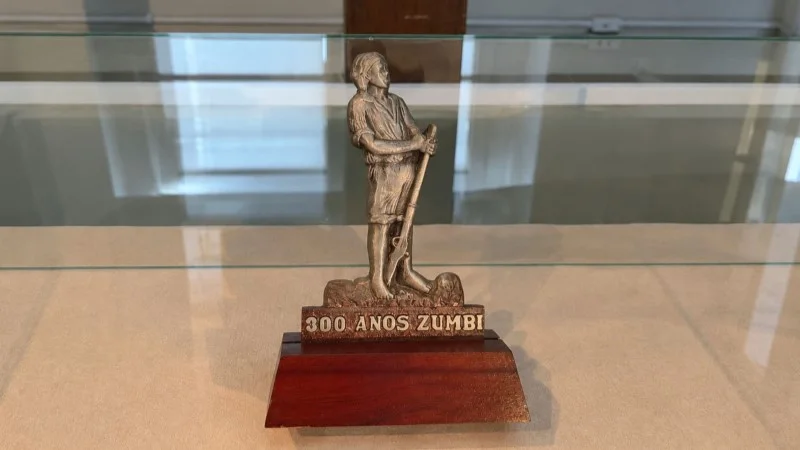

Registro em destaque
Troféu Comemorativo aos 300 Anos de Zumbi dos Palmares
- Data ou período
- Recebido pela Prefeitura de Itajaí em 1995; incorporado ao acervo do museu por volta de 1997.
- Procedência e incorporação
- Oferecido à Prefeitura de Itajaí pelo Movimento Negro Sebastião Lucas.
- Descrição
- Descrição do objeto a complementar após consulta e documentação do acervo.
- Contexto histórico
- O objeto registra a mobilização do movimento negro local e as ações de valorização da memória de Zumbi dos Palmares.
- Referências e fontes
- Referências e fontes a inserir.